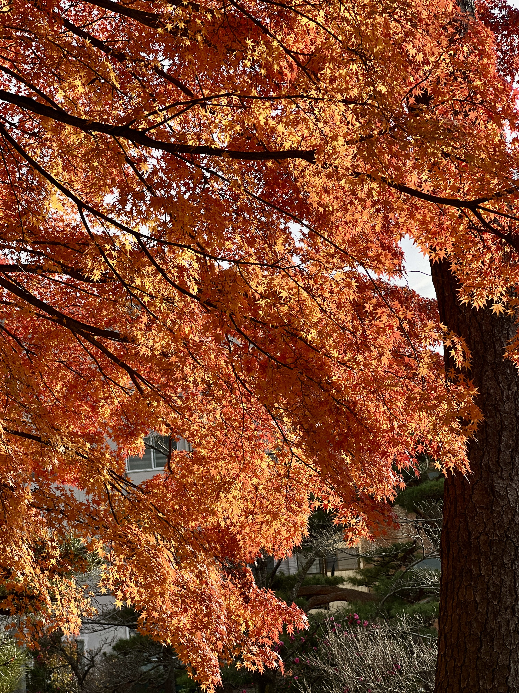

やまぶき
秋 / AUTUMN
山吹色
YAMABUKI-IRO
#F8B500
山吹の花から名付けられた、黄金を思わせる鮮やかな黄色。
SEASON 03 / AUTUMN
実りの季節を彩る、深くあたたかな色。光を含んだ黄色と、紅葉に重なる橙色から、秋の空気をたどります。
03
AUTUMN COLLECTION
秋 / AUTUMN
YAMABUKI-IRO
#F8B500
山吹の花から名付けられた、黄金を思わせる鮮やかな黄色。

かき秋 / AUTUMN
KAKI-IRO
#ED6D3D
秋に熟す柿の実のような、あたたかみのある深い橙色。